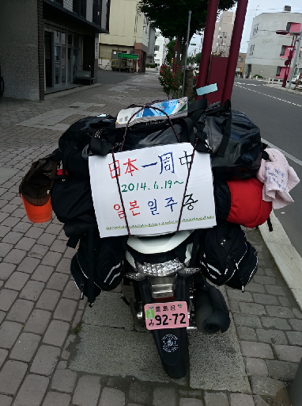
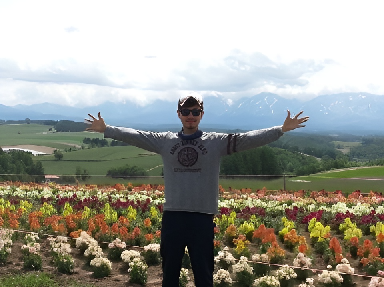
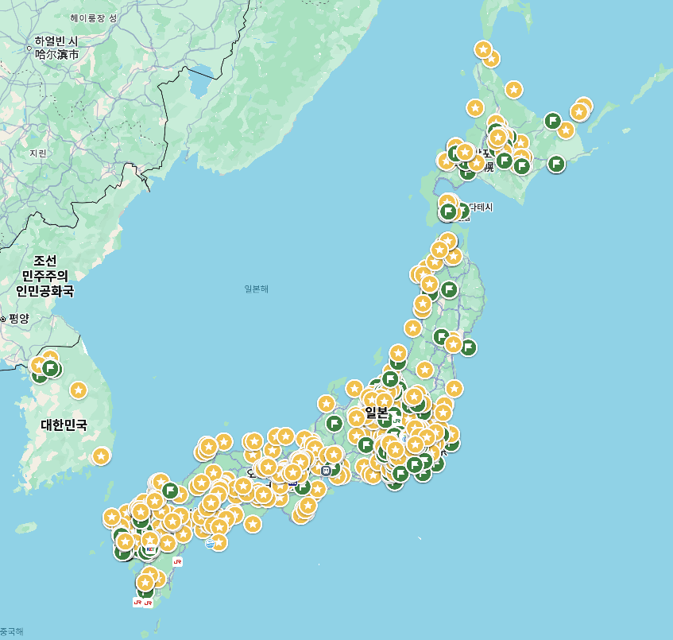

インバウンド特化の企画・リサーチ力
「訪日韓国人が本当に求めている情報は何か」を常に意識し、ホテルや飲食店、街のディープな魅力を掘り起こしています。デカ盛り弁当やコスパの良い居酒屋など、再生数に直結する切り口をゼロから見つけ出します。
希望職種: コンテンツディレクター / 映像クリエイター / インバウンドマーケティング担当
運営メディア: YouTube「도사남 DoSaNam」（登録者 約13.9万人）
現在のYouTube活動のベースにあるのは、この時の体験です。北海道から沖縄まで自分の足とバイクで走り、日本のローカルの魅力や人の温かさに直接触れてきました。長期間の単独走行で培った「決めたことを最後までやり抜く行動力」と「トラブルへの即応力」は、今の動画制作やチャンネル運営にもそのまま活きています。



13,500km以上の道のりを一人で完走。悪天候や車両トラブルにもその場で冷静に対処し、計画をやり遂げました。
定番の観光地だけでなく、各地の郷土料理や人々の暮らしに直接触れ、生きた日本の魅力を肌で学びました。
75日間にわたる長期の旅をスケジュール通りに管理しながら、日々の出来事を一つのストーリーとして記録し続けました。
動画の編集作業にとどまらず、リサーチ、企画、撮影、そして公開後の数字分析までをすべて一人で行っています。


「1kgの巨大弁当」というわかりやすいインパクトを前面に出し、クリックしたくなるサムネイルとタイトル設計で大きな反響を得た動画です。
YouTubeで再生する深夜から早朝まで使えるファミレスや、下町の良心的な大衆食堂など、旅行者が「今夜すぐ行ける」実用的な情報をわかりやすくまとめました。動画を見て実際に足を運んでくれる視聴者を多数生み出しています。
YouTubeで再生する動画を投稿して終わりにせず、YouTubeアナリティクスで反応を見ながら次の企画へ反映しています。